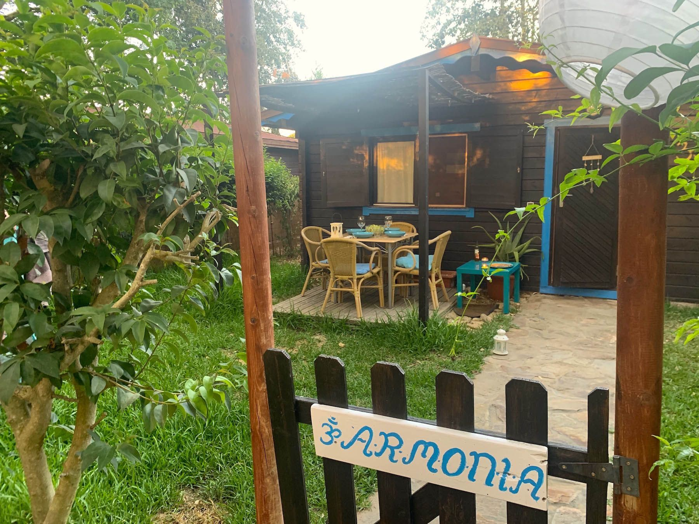

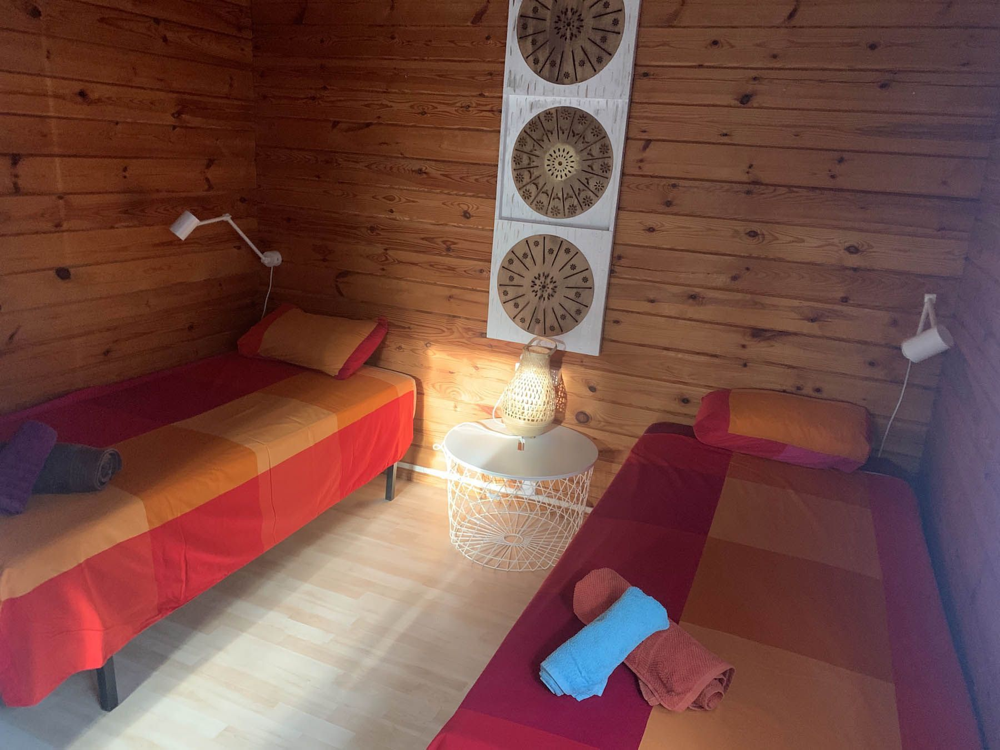
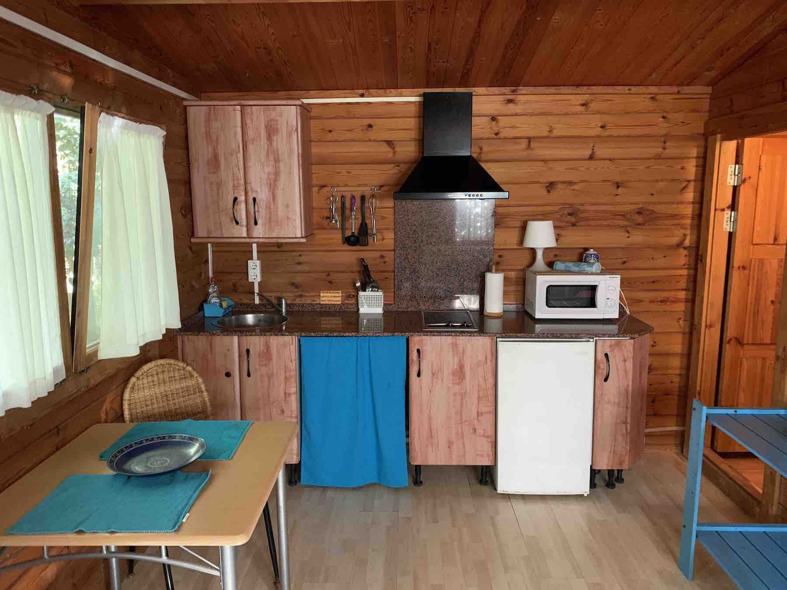
01 — Azul
Armonía
Un rincón fresco y sereno, pensado para despertar despacio y dejar que el día encuentre su ritmo.
- Hasta 4 huéspedes
- 2 dormitorios
- Cocina equipada
- Terraza privada
 Consultar fechas ↗
Consultar fechas ↗
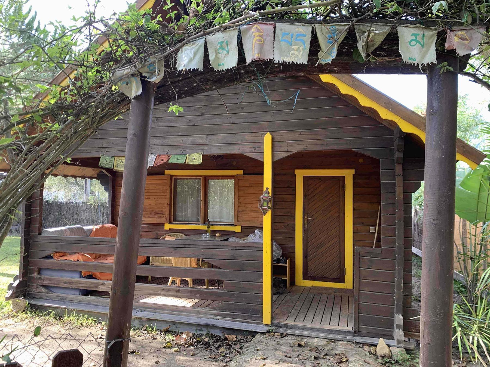
Alojamientos en Zahora
Cuatro bungalows con carácter propio para vivir el descanso a tu manera, a un paseo del mar.
Explora los bungalows ↗4 BUNGALOWS · NATURALEZA · CALMA
Elige tu refugio
Espacios sencillos, luminosos y rodeados de verde. Cada bungalow tiene su propio ritmo, su terraza y esa sensación de estar lejos de todo, aunque el mar esté muy cerca.



01 — Azul
Un rincón fresco y sereno, pensado para despertar despacio y dejar que el día encuentre su ritmo.
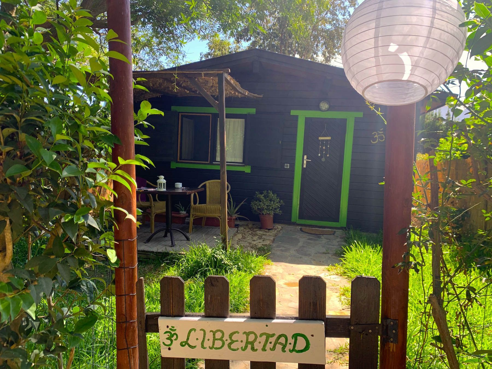

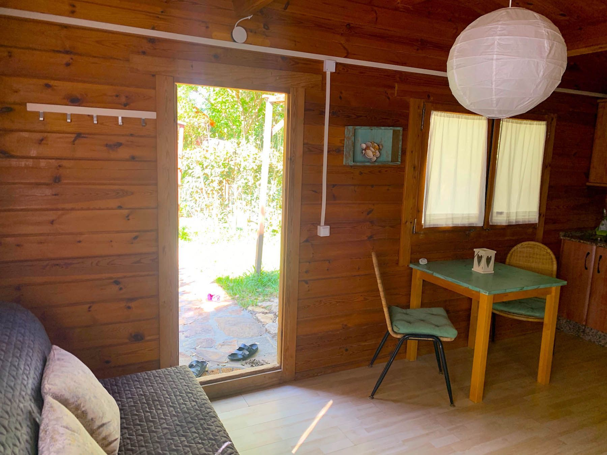
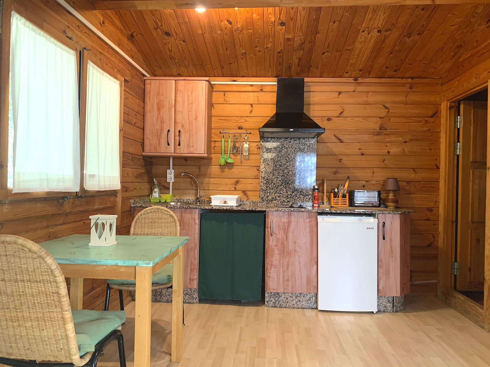
02 — Verde
Para quien quiere abrir la puerta, respirar hondo y sentir que no hay ninguna prisa esperando fuera.
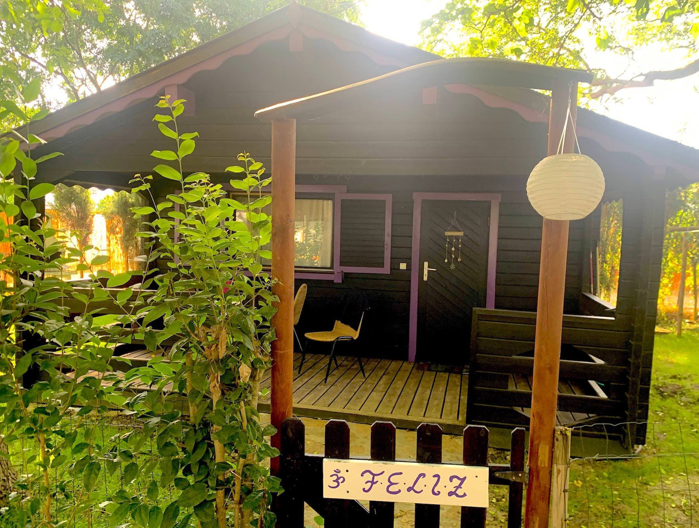
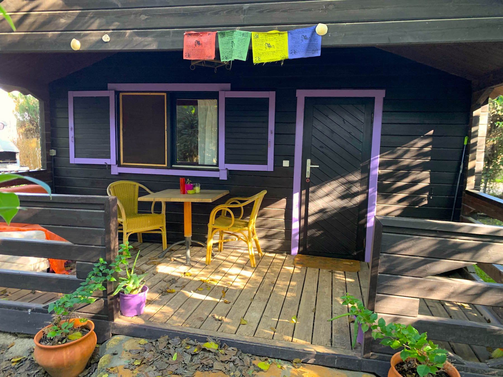
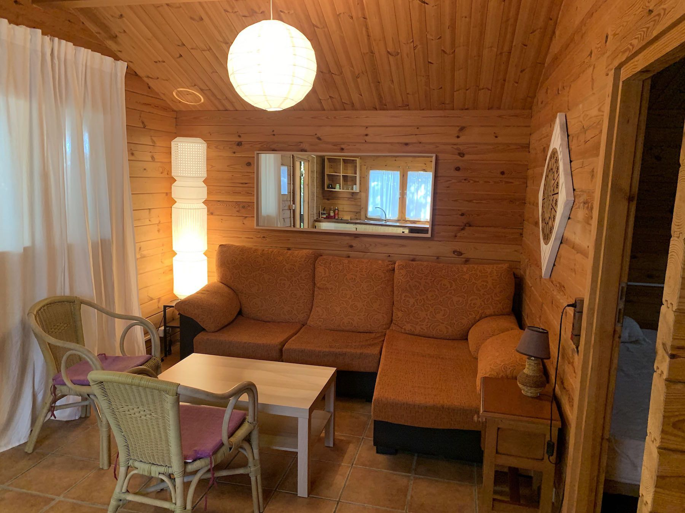
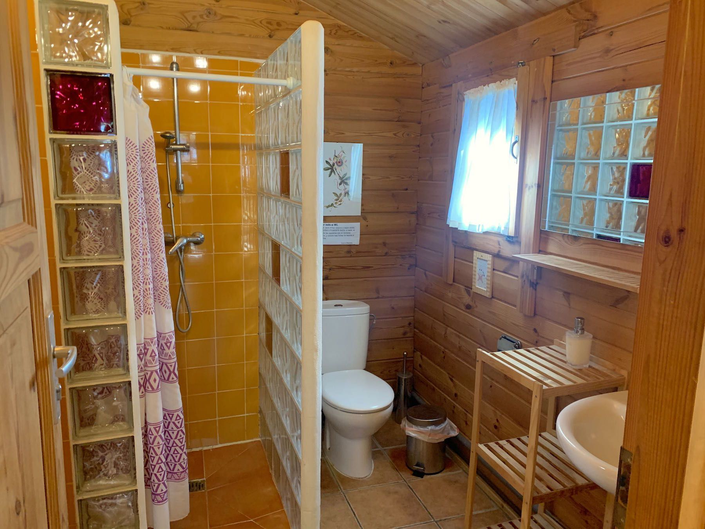
03 — Morado
Una casita con mucho encanto para pasar los días fuera y volver al atardecer a un lugar que se siente tuyo.
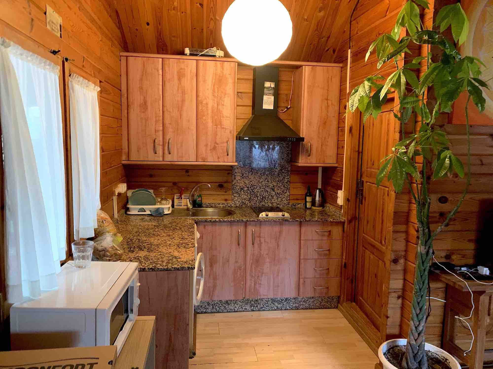
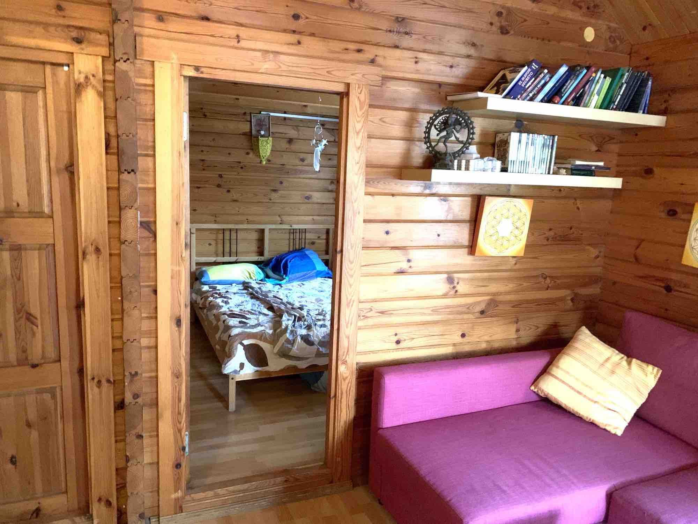
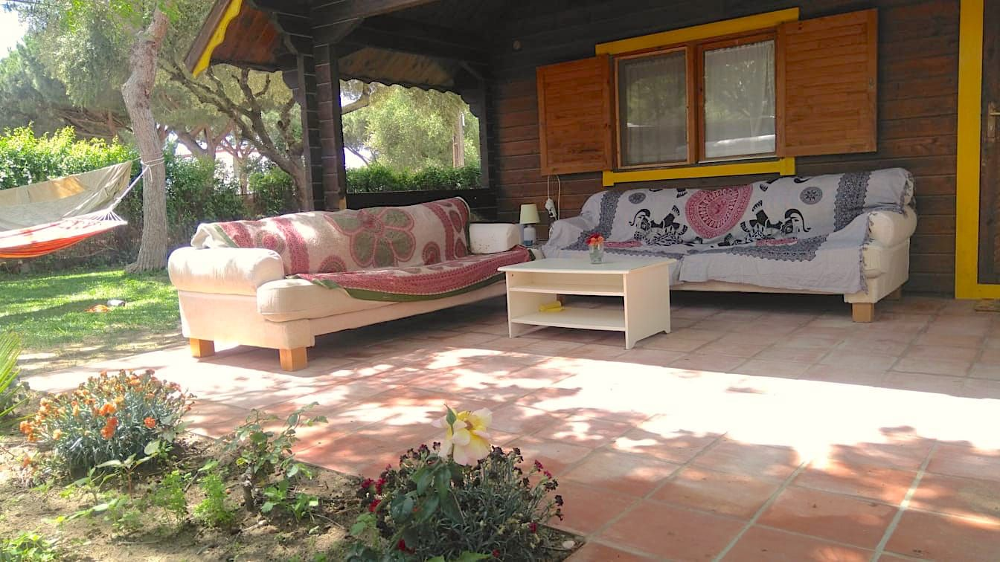
04 — Amarillo
El más soleado de todos. Un lugar alegre y acogedor para compartir desayunos largos y noches de verano.
Tu escapada empieza aquí
Cuéntanos cuándo quieres venir y te ayudamos a encontrar el bungalow que mejor encaja contigo.
Consultar disponibilidad ↗